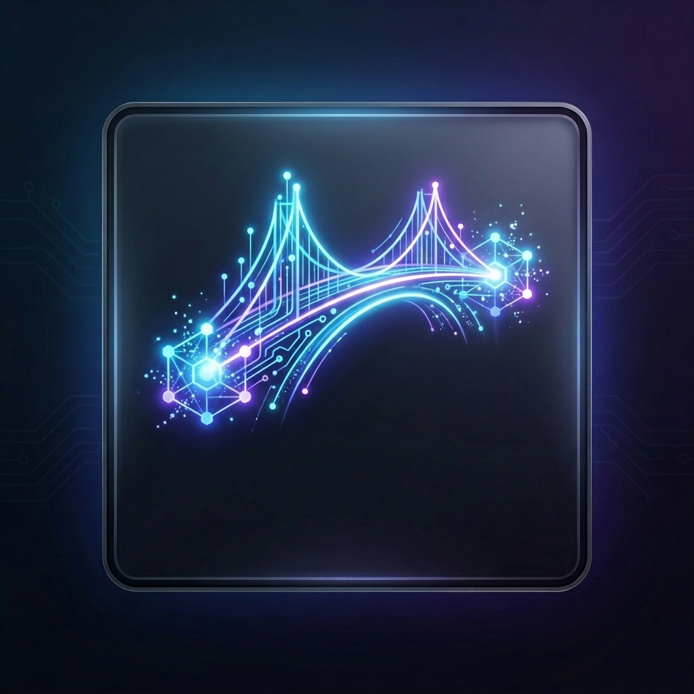

LlmBridge Kernel
Local Gateway Proxy
Active
模型通道与路由配置
LLM 通道列表
+ 添加通道
动脑模式
ⓘ
最大思考轮数 (Max Turns)
自动降级链 (Fallback Chain)
ⓘ
保存配置
对话调试
优先路由至快速模型 (Fast Model)
思考努力度:
关闭
Low
Medium
High
关闭
关闭
Low
Medium
High
清空历史
欢迎使用 LlmBridge 多模型流式对话桥接测试面板！请确保已在左侧配置相应的 API Key 后开始对话。
发送 (Send)
路由日志
清空日志
系统初始化完成，等待对话触发...
添加新模型通道
通道唯一标识 (ID)
显示名称 (Name)
接口 Base URL
API Key (在浏览器本地只读，仅存储在服务端)
主力模型名称 (Main Model Name)
快速模型名称 (Fast Model Name - 可选)
取消
确认保存
确认删除
取消
确定